Discography
Instruments & Performance
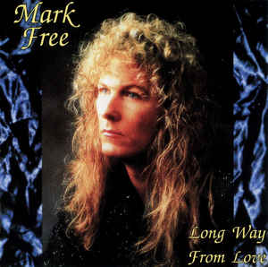
The Last Time
Mark Free - Long Way From Love
Now & Then
1993
Keep Running
Brooke White - Song From The Attic
New Millennium Records Group
2005
Writing & Arrangement
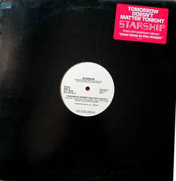
Tomorrow Doesn't Matter Tonight
Starship - Tomorrow Doesn't Matter Tonight
RCA
1985
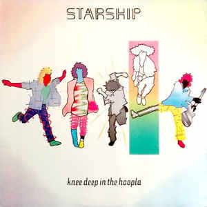
Tomorrow Doesn't Matter Tonight
Starship - Knee Deep In The Hoopla
Grunt
1985
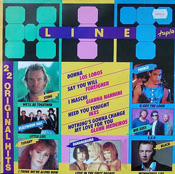
The Last Time
Various - Hitline
Finnlevy
1987
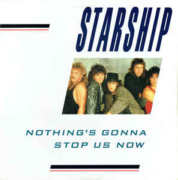
Tomorrow Doesn't Matter Tonight
Starship - Nothing's Gonna Stop Us Now
Grunt
1987
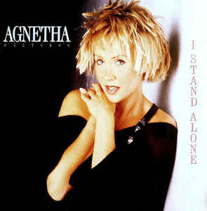
The Last Time
Agnetha Fältskog - I Stand Alone
WEA
1987
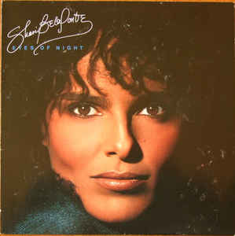
(Looking Through) The Eyes Of Night
Shari Belefonte - Eyes of Night
Metronome
1987
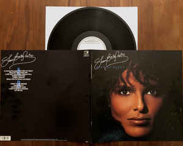
(Looking Through) The Eyes Of Night
Shari Belafonte - Eyes Of Night (12", EP, Promo)
Metronome
1987
The Last Time
Agetha Fältskog - The Last Time
WEA
1988
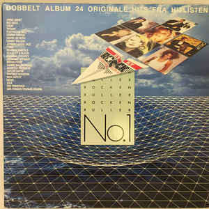
The Last Time
Various - Rocken Ruller No. 1 - Dobbelt Album 24 Originale Hits Dra Hitlisten
Virgin Records (Denmark)
1988
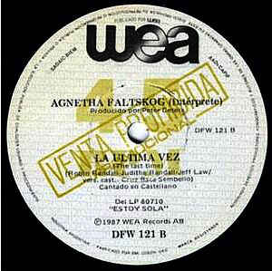
La Ultima Vez
Alex & Christina / Agnetha Fältskog - Chas! Y Aparazco A Tu Lado / La Ultima Vez
WEA
1988
A Love Forever Story
Various - Postens Reiseradio (Cass, Comp)
Posten
1988
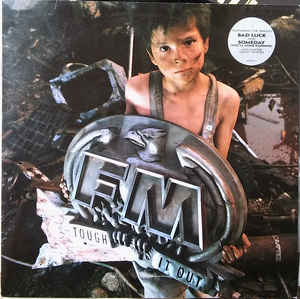
Someday
FM - Tough It Out
Epic
1989
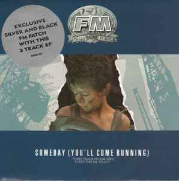
Someday (You'll Come Running)
FM - Someday (You'll Come Running)
Epic
1989
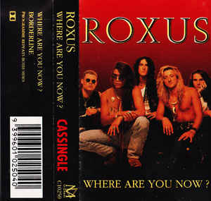
Where Are You Now?
Roxus - Where Are You Now?
Melodian
1991
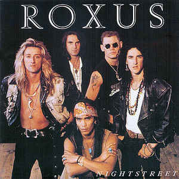
Where Are You Now?
Roxus - Nightstreet
Savage Records
1992
Coming Back For More
Mark Free - Long Way From Love
Now & Then
1993

Someday You'll Come Running
Venus & Mars - Grant Trine
Profilic Records
1994
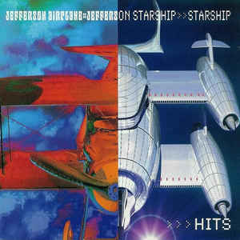
Tomorrow Doesn't Matter Tonight
Jefferson Airplane :: Jefferson Starship - Starship Hits
RCA
1998
The Last Time
Agnetha Fältskog - That's Me - The Greatest Hits
Polydor, Polar
1998
Accidentally On Purpose
Venus & Mars - New Moon Rising
Bareknuckle
1998
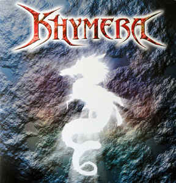
Bless A Brand New Angel
Khymera - Khymera
Frontier Records
2003
Love Looked Into My Life
James Christian - Meet The Man
Frontier Records
2004
If You Dare To Dream
Khymera - A New Promise
Avalon
2005
The Way Things Used To Be
Brooke White - Song From The Attic
New Millennium Records Group
2005
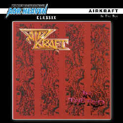
Someday You'll Come Running
Airkraft - In The Red
Aor Heaven
2012

Someday You'll Come Running
Various - 100 Hits Total Rock
100 Hits, Sony Music
Unknown
Production
Slow Down The Night
Mark Free - Long Way From Love
Now & Then
1993
Tomorrow Doesn't Matter Tonight
Venus & Mars - New Moon Rising
Bareknuckle
1998